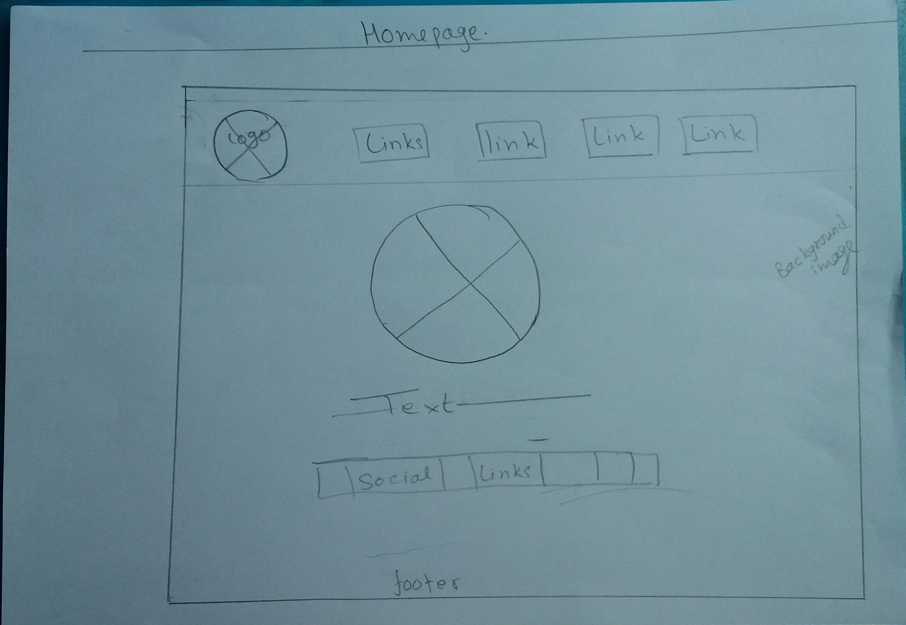

About Models_gp
This page contains website making process and it includes all the element that influenced me. It contains the wireframes used for making the website. Besides that, the page Models gp collects the evidence of code validation. While developing the website, lots of the websites were used as reference. Some of them are as follows:
AnujBM
W3 schools
Sololearn
While choosing the best one for the design, I took the screenshots of the websites. Then I created simple wireframe (sketch) in my copy and discussed with friends about the implementation of the wireframe. I visited more websites and later combined the style of all of them. Then final wireframe drawing started. At last, the drawing of wireframe was implemented as coding.
Site Navigation
This website has 6 pages:
Homepage
Homepage is landing page. This gives brief introduction about me. This page contains the navigation to the whole site.
About
This page contains my introduction and background.
CV
This page contains my professional introduction.
Contact
This page contains my current address in google map. This page has a form if any visitor has suggestions for me.
Social
This page contains my professional social links.
Models_Gp
This is the current page.
Wireframes
The wireframes I used to design the website are as below:
Homepage
About_me
CV
Contact
Social
Models_gp
Evidence of code validation
Nu Html Checker was used to validate the web pages. The result obtained from validation are as follows:
Validation of Homepage
Validation of About_me
Validation of CV
Validation of Contact